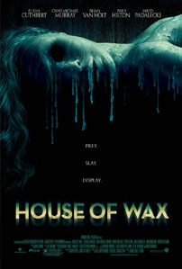
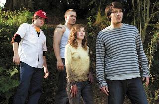

Review House of Wax
Minggu, 1 Desember 2013

Carly (Cuthbert); pacarnya, Wade (Padalecki); saudara kembarnya, Nick (Murray); dan sahabatnya, Paige (Hilton); Blake (Ri'chard) dan Dalton (Abrahams) sedang dalam perjalanan mereka menuju pertandingan baseball. Karena sudah larut, dan jalan pintas yang mereka pilih ditutup, mereka memutuskan untuk bermalam di suatu lahan kosong di mana mereka mendirikan dua tenda dan saling berpesta. Di tengah-tengah keasyikan mereka, sebuah truk berhenti di depan mereka dan menyalakan lampunya. Karena terusik, keenam remaja itu mulai menyuruh pengendara itu pergi dan Nick melempar botol birnya ke salah satu lampu depan truk itu hingga pecah. Akhirnya ia pergi dan semuanya nampak baik-baik saja.
Hanya saja ketika mereka tidur, seseorang mencuri kamera Dalton dan mulai merekam keenam remaja yang sedang terlelap itu. Dan keesokan harinya, tali kipas mobil Wade ditemukan putus dan Carly terperosok ke tempat pembuangan bangkai yang terletak di dekat tempat mereka kemah. Pada akhirnya hanya Paige, Blake, Nick dan Dalton yang memutuskan pergi menonton baseball sementara Carly dan Wade pergi ke kota terdekat untuk membeli tali kipas dengan bantuan orang lokal yang terlihat aneh.
Di Ambrose, kota kecil yang sangat sepi dan terlihat janggal, terletak sebuah rumah yang secara harfiah terbuat dari lilin. Di mana di dalamnya berisi patung-patung lilin buatan artis terkenal dari kota tersebut. Yang keenam remaja itu tidak ketahui, patung itu bukan hanya sekedar pahatan lilin, namun di dalamnya terkubur mayat-mayat yang sudah membusuk. Dan mereka sudah menjadi mangsa selanjutnya bagi sang pembunuh.
Film ini cukup bagus untuk film Thriller dan film ini sempurna secara teknis. Untuk sebuah film thriller remaja, House of Wax adalah salah satu film favorit yang bisa disandingkan dengan Scream dan I Know What You Did Last Summer. Ceritanya sedikit mirip , ada pengembangan karakter, dan komposisi musiknya yang bagus.

House of Wax membuat kita peduli terhadap korban-korbannya, sesuatu yang sangat jarang dilakukan film thriller lainnya di mana kita pengennya ngeliat mereka mati dengan cara sebrutal mungkin. Masing-masing karakter memiliki kisah tersendiri yang menarik dan nyata. Carly punya masalah serius sama saudara kembarnya Nick, Wade yang tidak berani meninggalkan kampung halamannya. Dan bagusnya lagi, aktor-aktor yang dipilih di sini mampu meranin tokoh mereka dengan baik.
Film ini juga cukup baik menampilkan adegan sadis dari setiap adegan pembunuhan yang ada. Kita emang peduli sama korbannya, tapi adegan kematian mereka bener-bener seru dan menegangkan. Kalo mau lebih spesifik, adegan kejar-kejaran Paige sama pembunuhnya nggak bisa bikin memalingkan muka dari layar. Dan waktu dia mati, perasaan campur aduk antara kasian sama kagum karena saking kerennya. House of Wax itu film yang bagus dan seru .
Soal seram atau tidaknya, itu tergantung selera orang. Film ini cukup tegang. Tensinya terjaga dengan baik sepanjang jalan dan ada beberapa adegan yang bisa bikin perut mual. Dalam sisi visual, film ini keliatan indah. Dan dalam sisi musik, film ini punya soundtrack yang keren banget. Komposisinya bagus dan pas sama tema keseluruhannya.